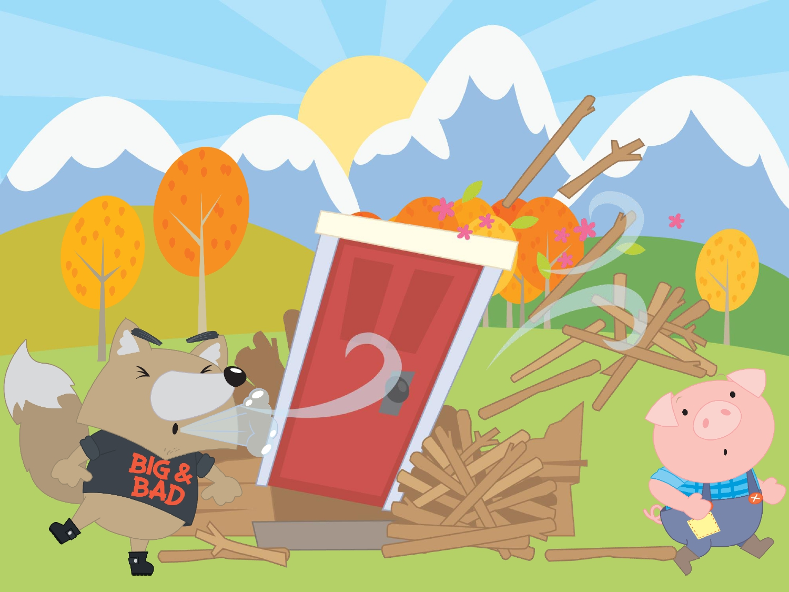
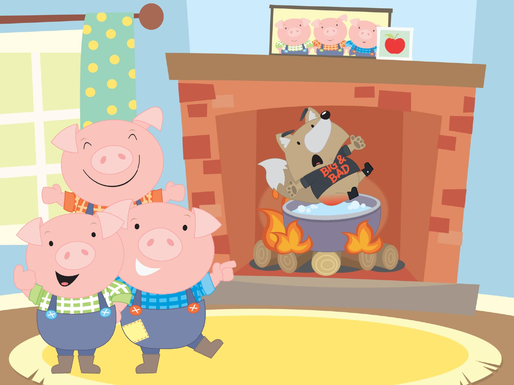
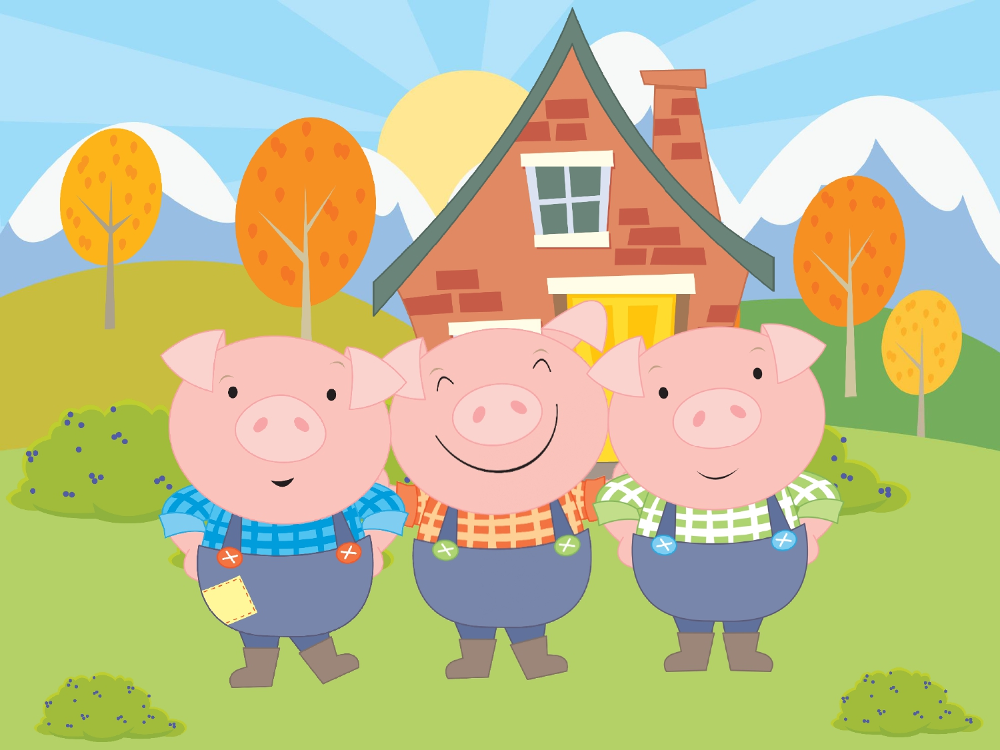

Había una vez tres cerditos que eran hermanos y vivían en el bosque. Les gustaba mucho cantar. El cerdito que era el hermano mayor era responsable y muy trabajador. Sin embargo, sus hermanos siempre estaban holgazaneando y preferían jugar y cantar a realizar sus tareas.
Su vida podría ser tranquila y feliz, de no ser por el Lobo Feroz, que siempre estaba al acecho. Ante el temor de que un buen día el lobo les pillara desprevenidos y pudiera merendárselos, idearon un plan:
- Construiremos una casa, así podremos meternos dentro cuando venga el Lobo Feroz y estaremos a salvo de sus fauces. - dijo el mayor de ellos.
A los otros dos cerditos les parecio una muy buena idea, y se pusieron manos a la obra. El hermano mayor, siempre tan responsable, comenzó de inmediato. Los otros dos cerditos continuaron jugando, pero ya habían pensando como serían sus casas.
- La mía será de paja, la paja es blanda y se puede sujetar con facilidad. Terminaré muy pronto y podré volver a jugar. - dijo el más pequeño.
- La mía será de madera. Puedo encontrar mucha madera en los alrededores. Construiré mi casa en un santiamén con todos estos troncos y me iré también a jugar. -dijo el mediano.
- La mía será de ladrillos. Aunque me cueste mucho esfuerzo, será muy fuerte y resistente, y dentro estaré a salvo del lobo. Le pondré una chimenea para asar las bellotas y hacer caldo de zanahorias. - dijo el mayor.
Cuando las tres casas estuvieron terminadas, los cerditos cantaban y bailaban en la puerta, felices por haber acabado con el problema:
-¡No nos comerá el Lobo Feroz! - ¡En casa no puede entrar el Lobo Feroz!
Y, de repente, de detrás de un árbol grande surgió el lobo, rugiendo de hambre y gritando:
- Cerditos, ¡Os voy a comeeeeeerrrrrrr!.
Asustados, todos echaron a correr y cada uno se escondió en su casa, pensando que estaban a salvo. Sin embargo, el Lobo Feroz lejos de huir, se encaminó a la casita de paja del hermano pequeño y en la puerta aulló:
- ¡Soplaré y soplaré y la casita derribaré!
El lobo con todas sus fuerzas, sopló y sopló y la casita de paja se vino abajo. El cerdito pequeño corrió lo más rápido que pudo y entró en la casa de madera del hermano mediano.
De nuevo el Lobo Feroz, más enfurecido que antes al sentirse engañado, se colocó delante de la puerta y comenzó a soplar y soplar gruñendo:
- ¡Soplaré y soplaré y la casita derribaré!
La madera crujió, y las paredes cayeron y los dos cerditos corrieron a refugiarse en la casa de ladrillo del mayor.
-¡No nos comerá el Lobo Feroz! - Cantaban los cerditos.
El lobo estaba realmente enfadado y hambriento, y ahora deseaba comerse a los Tres Cerditos más que nunca, y frente a la puerta bramó:
- ¡Soplaré y soplaré y la casa derribaré!
Pero este lobo era muy astuto y además tenía mucha hambre, así que decidió trepar por la pared y entrar por la chimenea. Trepó, se deslizó hacia abajo... Y cayó en el caldero donde el cerdito mayor estaba hirviendo sopa.
Escaldado y con el estómago vacío salió huyendo hacia el lago y los tres cerditos no le volvieron a ver jamás.
El cerdito mayor regañó a los otros dos por haber sido tan perezosos y poner en peligro sus propias vidas.
Y, si algún día vais por el bosque y veis tres cerditos, sabréis que son los Tres Cerditos porque les gusta cantar.
